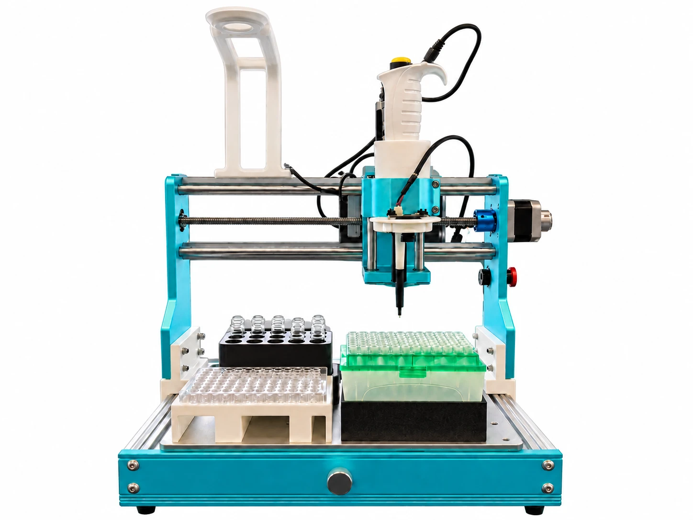
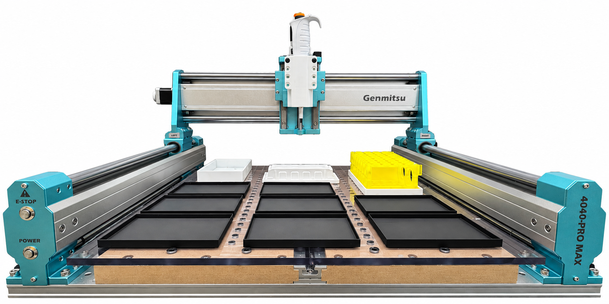

Hardware you can build on
Cub pairs a CNC gantry with custom instrument mounts and labware. Explore the published hardware designs and build guides to see how it comes together.
Affordable pipetting. Open-source software. More of your budget left for discovery.
Collaborating with researchers at
Researchers are using Ursa Labs systems to automate materials characterization, electrochemistry, and autonomous experimentation.
Our first product
Bring automated pipetting to your lab bench with Cub. Start with liquid handling, then explore custom instrumentation for the work ahead.
Talk to us about liquid handlingHardware
Two sizes. The same open-source software. Choose the platform that fits your bench and your workflow.
|
 Cub |
 Cub XL |
|
|---|---|---|
| Work area | 300 × 180 mm | 400 × 300 mm |
| Well-plate capacity | 4 × 96-well plates | 12 × 96-well plates |
| Instrument heads | Single mount | Single or multi-mount |
| Footprint | Benchtop / fume hood | Benchtop |
| Best for | Repetitive benchtop work | High-throughput assays and workflows |
Custom Instrumentation
Your research goes beyond pipetting. Explore instrument setups for electrochemistry, imaging, and materials characterization, all coordinated through CubOS.


| Supported Instruments | Supported Vendors | Category |
|---|---|---|
| Pipette (Picus 2) | Sartorius | Liquid handling |
| Potentiostat (SquidStat Series) — CV, OCP, CA, CP | Admiral Instruments | Electrochemistry |
| UV-Vis Spectrometer (CCS100 / CCS175 / CCS200) | Thorlabs | Optical characterization |
| Film Thickness (F-Series) | KLA / Filmetrics | Thin-film measurement |
| Pipette (P300) | Opentrons | Liquid handling |
| ASMI Indenter (GoDirect Force Sensor) | Vernier | Hardness and Puncture Testing |
| UV Curing System (OmniCure S1500 PRO) | Excelitas | Sample preparation |
| Camera | Raspberry Pi | Imaging and monitoring |
Built to be yours
Explore how your system works and adapt it to your research.
Cub pairs a CNC gantry with custom instrument mounts and labware. Explore the published hardware designs and build guides to see how it comes together.
CubOS coordinates gantry movement and instruments through protocols you can inspect and edit. Read the code, adapt a workflow, and build on what is there.
A local web interface over CubOS. Edit configs, calibrate gantries, validate motion, and launch protocols from the browser — then watch experiment data come in live.
Ursa Labs develops affordable lab automation, starting with Cub and Cub XL liquid handlers. CubOS coordinates the hardware and instruments, and Operator provides a browser interface for working with protocols.
Cub is the compact benchtop platform. Cub XL provides a larger work area for labware and instrument setups. Both use CubOS. See the hardware comparison to choose a starting point for your lab.
Yes. CubOS is open-source software. The Cubware library provides published hardware designs and CAD files, with build guides for specific configurations.
Yes. Get in touch with the instruments and workflow you want to automate. We can discuss the setup, integration work, and fit for your lab.
Get in touch
From your first liquid handler to a new experiment, tell us what you have in mind.
alex@ursalabs.ai